NEW YORKERS / BY MLOW
A city of
characters.
An art census of New York. The people, the places, the beautiful madness of belonging here.
7,542 characters. One artist. Every one has a story.
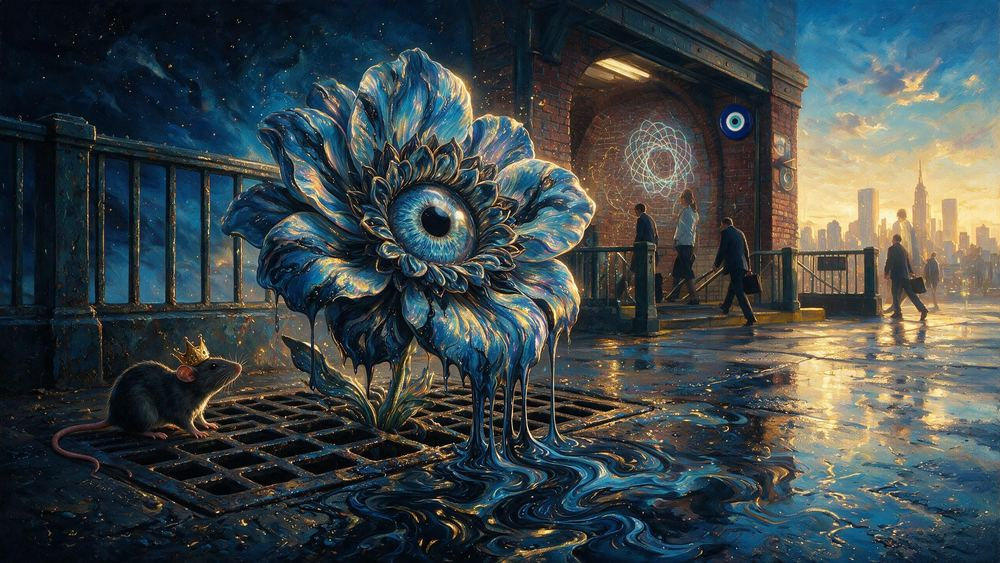
NO. 1467 The First Eye FlowerMeet this New Yorker ↗
THE NEW YORKER OF THE DAY
THIS WEEK IN NEW YORKERS
THE GRAIL · A 1/1 BY MLOW · AVAILABLE
In case of emergency,
break glass.
A blue case of evil eyes, and they are watching the hammer. Hit the glass three times and one of the Keystone 111 comes out, pulled from 163 painted states. Re-arm it and the shards fly back for another pull. The Canal Street Bootlegs are the rarest. There is only one of it, and it is listed now: 1.4269 ETH to buy it outright, or bid from a 1 ETH reserve.
THE FILM
The city is the art.
Dawn to dark across the five boroughs. Census pieces set in motion, scored on the beat. By MLow.
ONE OF SEVEN THOUSAND FIVE HUNDRED AND FORTY TWO
Say hello to a stranger.
FOUR QUESTIONS
Which New Yorker are you?
Everybody in this city is already a character. This just tells you which one, out of all 7,542, and it does not flatter you.
THE SUNDAY COUNT · ONE EMAIL A WEEK
The city, counted
every Sunday.
Who got counted, which reader's nomination got painted, and what opens or closes next, before it hits X. One letter a week, and one click to leave.
NEW ON THE SITE
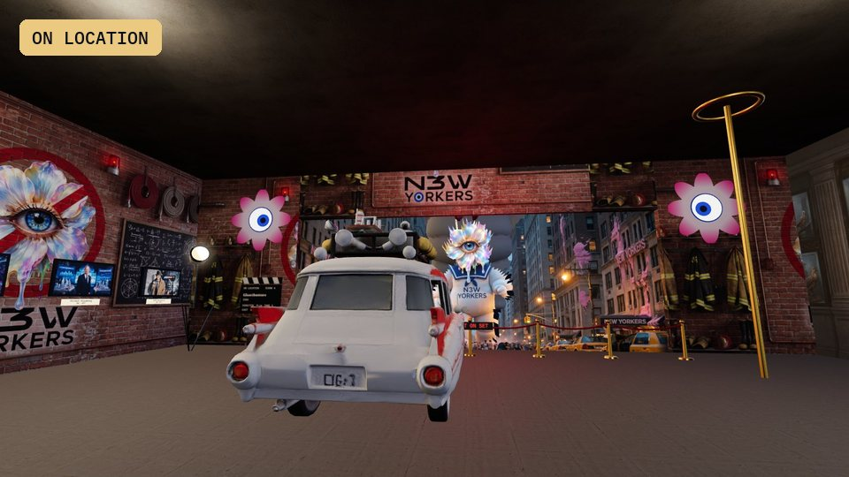
01 / ON LOCATIONNew York
at the movies.
A hundred and five film sets, rebuilt and recast with New Yorkers. Talk to the mirror, play the floor, do not press the button, and do not look away from the skeleton.
Walk the sets ↗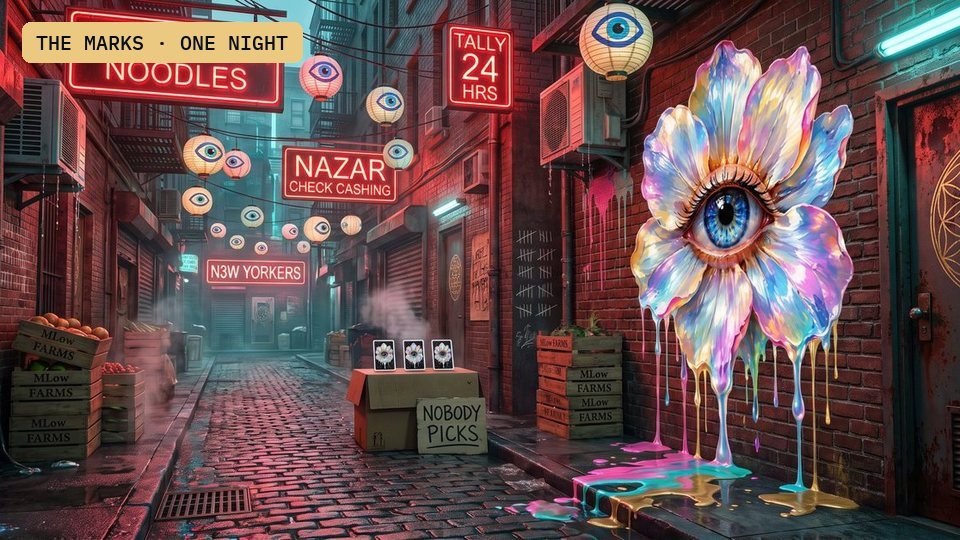
02 / THE MARKSOne night
in the city.
Walk seven rooms of one New York night and meet THE MARKS: the deli, the station, the census office, the theatre, the roof. Take a number. Nobody picks.
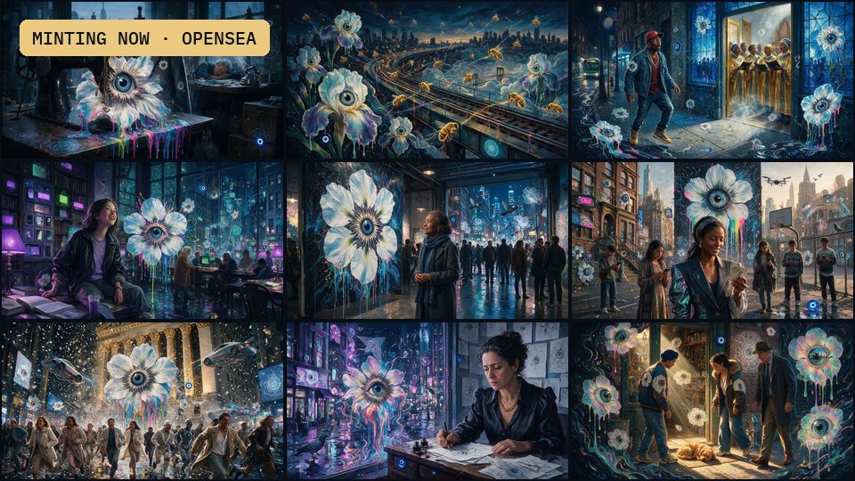
03 / MINTING NOWTHE CENSUS RELEASE.
Open on OpenSea.
Every New Yorker you mint is one nobody else will ever hold. Open until November 7, 11:11 AM ET.
Mint on OpenSea ↗04 / KEYSTONEThe founding
New Yorkers.
Dynamic ones of one on Transient Labs. The art inside keeps growing after you own it.
See the Keystone ↗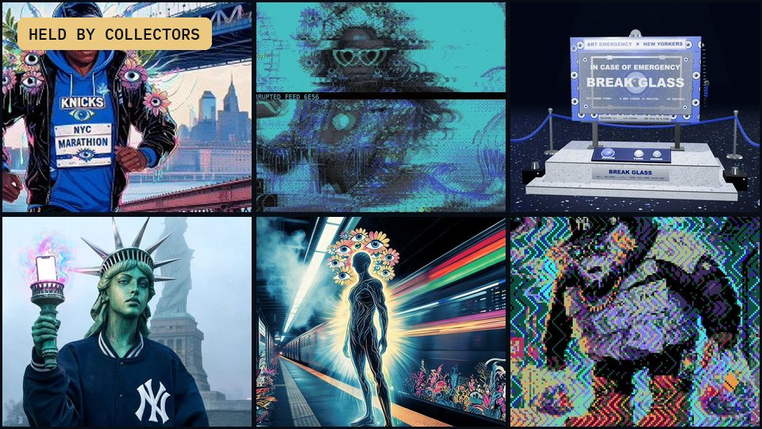
05 / THE COLLECTORSEveryone who
holds the city.
The board, the badges, and a page of your own for every wallet.
Find your rank ↗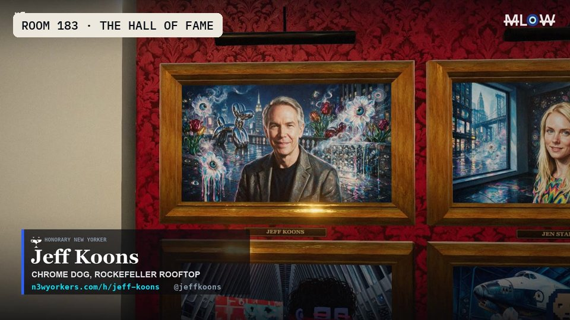
06 / ROOM 183The honoraries,
all on one wall.
Every honorary portrait hung in a Hall of Fame rotunda, with a name plate under each.
Walk inside ↗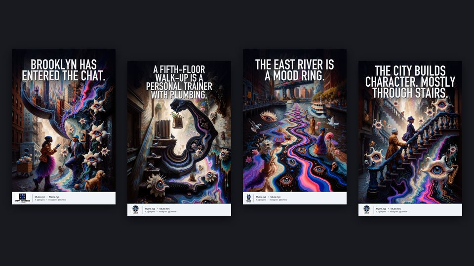
07 / THE POSTER WALLPosters, cards
and memes.
The whole wall of hype posters and share cards, free to save and post.
Browse the wall ↗08 / MARK IT UPDraw on any
New Yorker.
Pick a piece, scribble on it, save it, post it.
Start drawing ↗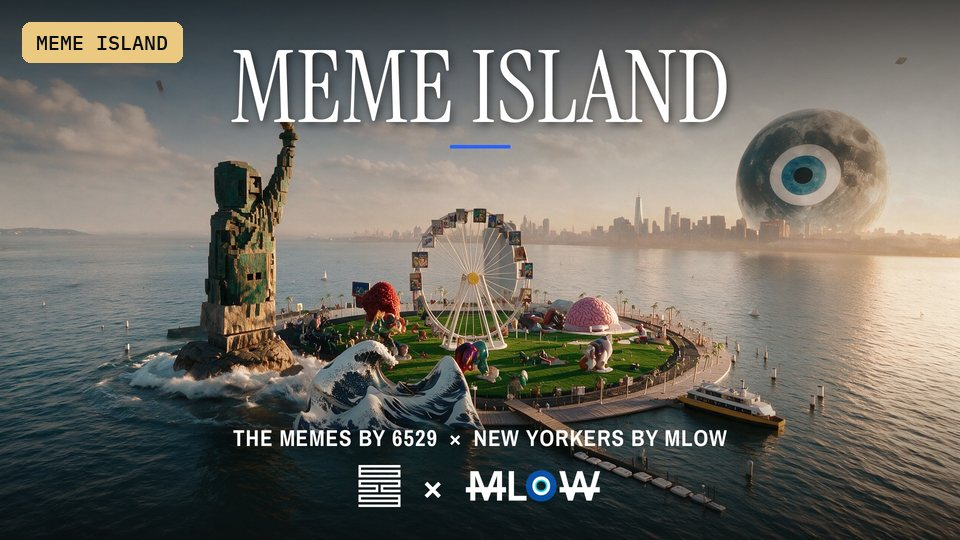
09 / MEME ISLANDAn island for
The Memes.
Every card of The Memes by 6529 hung on a walkable island, with 66 meme sculptures and the New Yorkers of the crypto eras.
Walk the island ↗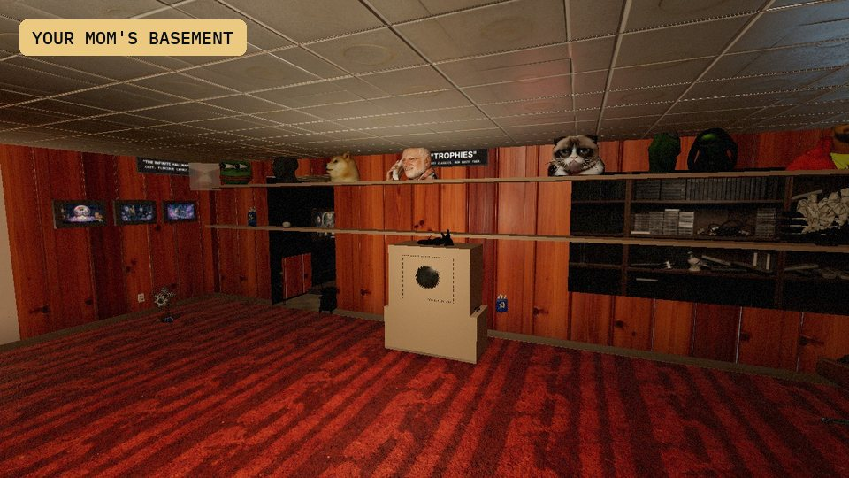
10 / YOUR MOM'S BASEMENTA basement
in Queens.
Eight rooms under a two family house, census pieces on every wall, forty easter eggs and the Rat King. Mom is upstairs.
Go downstairs ↗THE MUSIC VIDEO
Skate the sets.
Kong clears the Warriors gap at Coney Island. Then the cast of ON LOCATION skate each other's movie sets, one bar each, and everybody falls on the drop. Shot inside the gallery. By MLow.
THE WALKABLE GALLERIES
Thirteen places to walk.
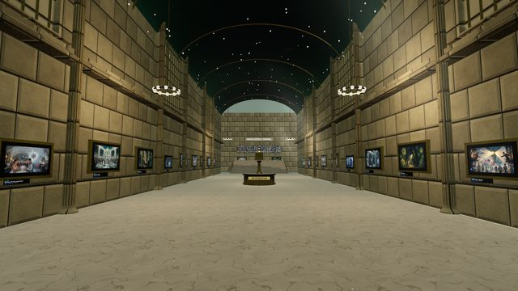
THE MUSEUM · 183 ROOMSThe MuseumA hundred and eighty three New York rooms with the census on the walls. Pick a door, or see every room at once.ON LOCATION · 105 FILM SETSNew York at the moviesA hundred and five scenes the city gave the movies, rebuilt as sets you can walk, and now skate: press K.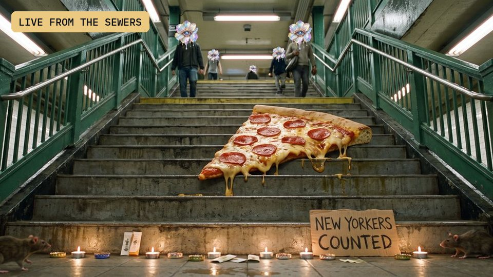
LIVE FROM THE SEWERS · 12 ROOMSHome of the Pizza RatFall through a manhole and walk the city under the city at rat scale. Customs, a fatberg cathedral, a crumb stock market, a bodega cat border.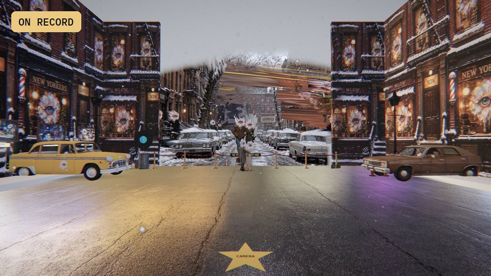
ON RECORD · 11 MUSIC ROOMSNew York on waxThe streets, stoops and clubs where the city made its music, rebuilt as rooms. Every room plays its own song and hides a trick.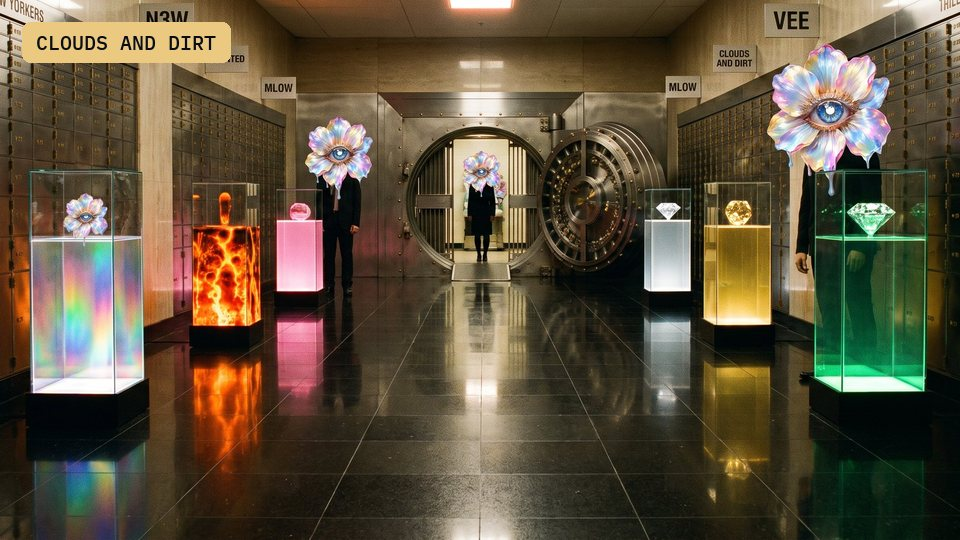
CLOUDS AND DIRT · 25 FLOORSA tower for Gary VeeFrom a liquor store basement to the sky over Manhattan, then the VeeFriends wing that can only exist online: the Spectacular vault, the TCG arena, Burn Island, the punk vault, the cellar, the feed. His portraits by MLow on the walls.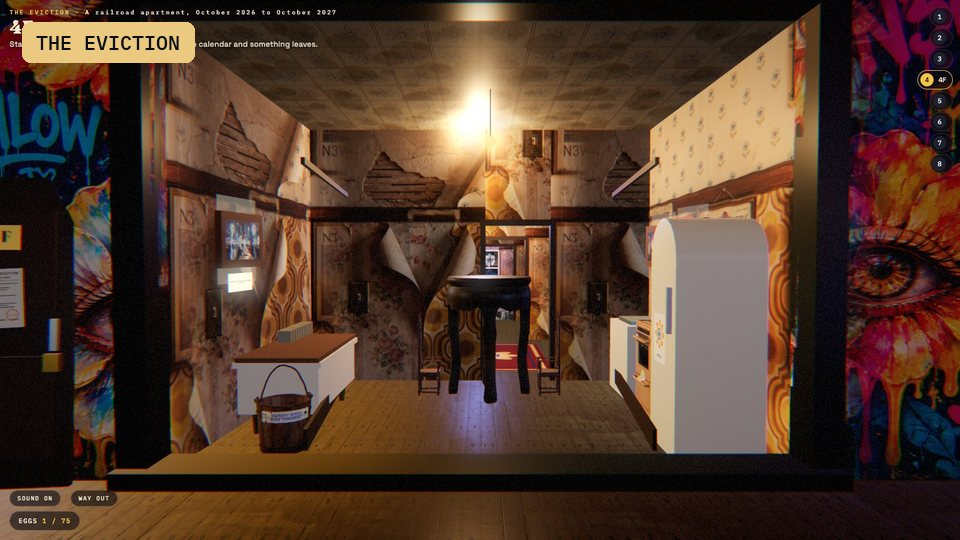
THE EVICTION · 4F, A YEARThe year 4F was emptiedOne tenement under the J, from the curb to the roof. Tear the calendar and something leaves; pin the month you want to keep. SAME DIFFERENCE · 53 PAIRSNew Yorkers who sound the samePROFIT and PROPHET, BRAKE and BREAK, TAWK and TOCK. Nine New York places, nine ways to turn one word into the other.THE MARKS · ONE NIGHT IN THE CITYOne night in the citySeven rooms between 3 a.m. and dawn, each opening onto a photograph turned into space. The 150 uncounted.
SAME DIFFERENCE · 53 PAIRSNew Yorkers who sound the samePROFIT and PROPHET, BRAKE and BREAK, TAWK and TOCK. Nine New York places, nine ways to turn one word into the other.THE MARKS · ONE NIGHT IN THE CITYOne night in the citySeven rooms between 3 a.m. and dawn, each opening onto a photograph turned into space. The 150 uncounted.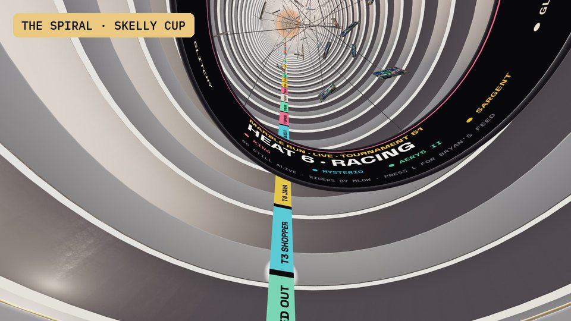
THE SPIRAL · THE SKELLY CUPThe marble run towerA Guggenheim ramp that is also a marble run, one turn per tournament, every race painting on the way up.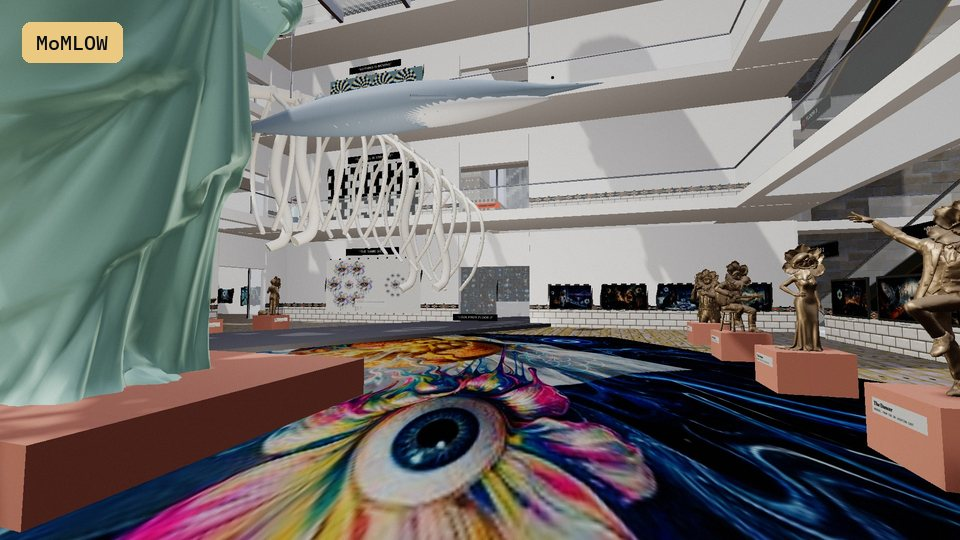
MoMLOW · AFTER MoMA · SIX FLOORSThe MLow MuseumThe real MoMA plan for the census: the atrium with Liberty in it, six floors hung by a curator that learned MLow's taste, the cabs out front, and every collected New Yorker on one wall.YOUR MOM'S BASEMENT · QUEENSA basement in QueensA degen dungeon under a two family house: the den, the card room, the boiler, an infinite hallway. Mom texts.MEME ISLAND · THE MEMES BY 6529An island of memesAll 527 meme cards hung by district, 144 crypto era New Yorkers, 66 meme sculptures, a Windows 98 desktop.MLOW INTERNATIONAL · TERMINAL BAn airport of fLOWersCheck in under the logo, a concourse of fLOWers, the gate hub and MLOW AIR on the apron. Light baked in Cycles.A FEW FACES TO START WITH
Find your New York.

THE CITY IS THE GALLERY
Take a little
walk with us.
Enter an artist-built New York, with art on the walls and space to wander. Pick a room. Look around. Stay a while.
Choose your first room ↗Or see every room and gallery first ↗No sign-in needed. Guided tours and touch controls included.
ROOMS WORTH THE WALK
Six doors, wide open.
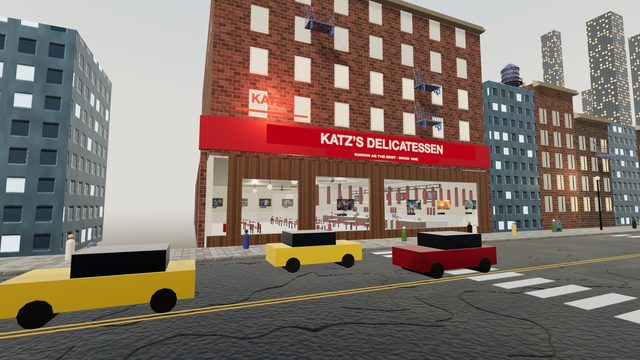
THE PORTRAIT LUNCHKatz’s DelicatessenHouston and Ludlow, the red sign band and the long cutting counter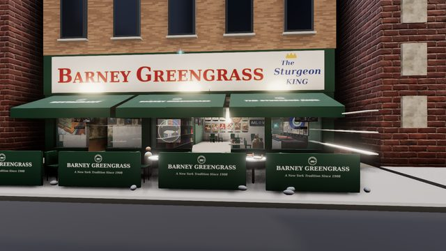
SUNDAY REGULARSBarney GreengrassThe Sturgeon King on Amsterdam Avenue, green awnings and a window table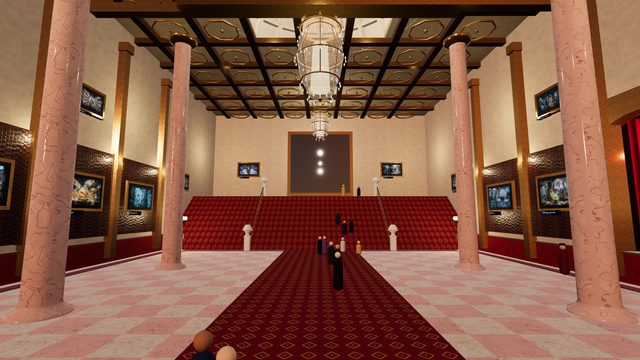
BEFORE THE CURTAINKings TheatreFlatbush Avenue under the marquee, through the bronze doors into the grand foyer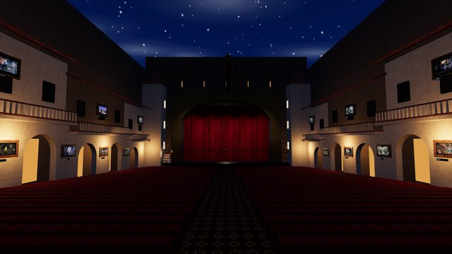
A SKY INSIDE JAMAICALoew’s ValenciaAn atmospheric theatre in Queens where the ceiling is a Spanish nightTHE CLIMBThe VesselInterlocking copper staircases at Hudson Yards, works on every parapetUNDER THE STARSGrand CentralThe concourse beneath the celestial vault and the brass clockFOLLOW YOUR CURIOSITY
THINGS NOBODY WAS SUPPOSED TO FIND
The city keeps
a few secrets.
There are things buried in this site that only respond if you know what to say to them. No menu lists them. No page explains them. They have been found by people who were poking at the thing instead of reading it.
Start by typing the name of the most famous rodent in New York.


MADE IN NEW YORK
Every New Yorker gets a portrait.
Even the villains.
Art and stories by MLow. An ongoing love letter to a city that never sits still.
More about the project ↗ Press room ↗